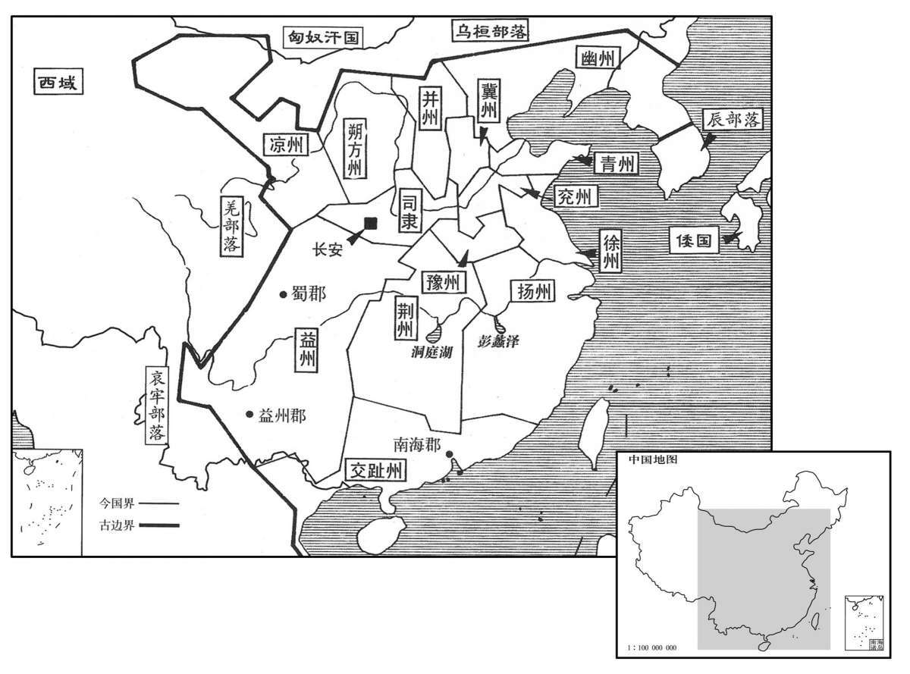

公元前106年资治通鉴：本年记事、原文与白话对照
按原书编年位置阅读；追叙和史论不等于本年发生的事件。白话采用所据译本，缺译不以生成译文补齐。
卷21 · 本年记事
公元前106年 · 汉世宗孝武皇帝元封五年
元封五年〔（乙亥、前一○六）〕
冬，上南巡狩，至于盛唐，〔文颖曰：按地理志不得，疑当在庐江左右，县名。韦昭曰：在南郡。余据唐地理志，寿州有盛唐县，盖以古地名名县。宋白曰：寿州六安县，楚之潜也，在汉为盛唐县，西十五里有盛唐山。〕望祀虞舜于九疑。〔地理志：九疑山在零陵营道县南，亦名苍梧山；九峰相似，望而疑之，故曰九疑。相传舜死于苍梧，因葬焉，故望祀之。〕登灊天柱山，〔班志，灊县属庐江郡，天柱山在南，帝以为南岳。灊，音潜。唐之舒州。〕自寻阳浮江，〔班志，寻阳县属庐江郡。禹贡九江在南，皆东合为大江。沈约曰：寻阳，因水名县，水南注江。余据汉寻阳县在大江之北，自晋立寻阳郡于江南之柴桑，而江北寻阳之名遂晦。杜佑曰：汉旧寻阳县在江北，今蕲春郡界；晋温峤移于江南。〕亲射蛟江中，获之。〔师古曰：蛟，龙属也。郭璞说其状云：“似蛇而有脚，细颈有白婴，大者数围，卵生，子如二石大瓮，能吞人。”射，而亦翻。〕舳舻千里，薄枞阳而出，〔李斐曰：舳，舡后持柁处；舻，船前刺棹处。言其船多，前后相衔，千里不绝也。舳，音逐。舻，音卢。班志，枞阳县属庐江郡。宋白曰：舒州桐城县，汉为枞阳县也；梁置枞阳郡。师古曰：枞，千容翻。〕遂北至琅邪，〔琅邪郡，秦置；唐为沂州，其余地入海、莱、密州界。〕并海，〔并，步浪翻。〕所过礼祠其名山大川。春，三月，还至太山，增封。甲子，始祀上帝于明堂，配以高祖；因朝诸侯王、列侯，受郡、国计。〔师古曰：计，若今之诸州计帐也。朝，直遥翻。〕夏，四月，赦天下，所幸县毋出今年租赋。还，幸甘泉，郊泰畤。
冬季，汉武帝向南巡游，到达盛唐，遥望九疑山，祭祀虞舜。又登县天柱山，然后从寻阳乘船游长江，在江中亲自射蛟，并将其捕获。汉武帝的船队首尾衔接，连绵千里，接近枞阳时弃船登陆，向北行至琅邪郡，沿海前行，一路祭祀名山大川。春季，三月，汉武帝于归途中经过泰山，命人将祭天神坛增大。甲子(二十一日)，汉武帝第一次在明堂中祭祀上帝，将汉高祖刘邦作为配祀，又命各诸侯王、列侯前来朝见，接受各郡、国记载户口赋税的薄册。夏季，四月，汉武帝下令大赦天下，凡此次巡游经过的各县一律免除今年的田租、赋税。回京后，巡幸甘泉宫，祭祀于泰。
长平烈侯卫青薨。〔考异曰：汉武故事云：“大将军四子皆不才，皇后每因太子涕泣请上削其封。上曰：『吾自知之，不令皇后忧也。』少子竟坐奢淫诛。上遣谢后，通削诸子封爵，各留千户焉。”按青四子无坐奢淫诛者，此说妄也。〕起冢，象庐山。〔庐山，盖即卢山。杨雄所谓“填卢山之壑”者也。师古曰：卢山，匈奴中山名。卫青冢在茂陵东，次霍去病冢之西，相并者是也。〕
长平侯卫青去世。汉武帝为他修建了一座像匈奴国中的庐山一样形状的坟墓。
上既攘却胡、越，开地斥境，乃置交趾、朔方之州，及冀、幽、并、兖、徐、青、扬、荆、豫、益、凉等州，凡十三部，皆置刺史焉。〔续汉志：秦有监郡御史，监诸郡；汉兴省之，但遣丞相史分刺诸州，无常官。孝武帝初置刺史十三人，秩六百石。古今注曰：常以春分行部，郡、国各遣一吏迎界上。汉旧仪曰：诏书旧典，刺史班宣，周行郡国，省察治政，黜陟能否，断理冤狱，以六条问事，非条所问，即不省。一条，强宗豪右田宅逾制，以强陵弱，以众暴寡。二条，二千石不奉诏书、遵承典制，倍公向私，旁诏牟利，侵渔百姓，聚敛为奸。三条，二千石不恤疑狱，风厉杀人，怒则任刑，喜则任赏，烦扰苛暴，剥戮黎元，为百姓所疾；山崩石裂，妖祥讹言。四条，二千石选置不平，苟阿所爱，蔽贤宠顽。五条，二千石子弟怙恃荣势，请托所监。六条，二千石违公下比，阿附豪强，通行货赂，割损政令。续汉志又曰：诸州常以八月巡行郡国，录囚徒，考殿最。初，岁尽诣京都奏事，中兴，但因计吏。与古今注异。据晋志，帝改禹贡雍州曰凉州，梁州曰益州，又置徐州，复禹贡旧号，北置朔方，南置交趾，与荆、扬、兖、豫、青、冀、幽、并为十三州。春秋元命包及晋书地理志，昴、毕散为冀州。其地有险有易，帝王所都，乱则冀安，弱则冀强，荒则冀丰。箕星散为幽州，言北方太阴，故以幽冥为号。营室流为并州，不以卫水为号，又不以恒山为称，而云并者，盖以其在两谷之间也。五星流为兖州。端也，信也；又云，盖取沇水以名焉。天氐流为徐州，盖取舒缓之义；或云因徐丘以立名。虚、危流为青州；周礼曰：正东曰青州，盖取地居少阳，其色青，故名。牵牛流为扬州，以为江南之气躁劲，厥性轻扬；亦云州界多水，水波轻扬也。轸星散为荆州，强也，言其气躁强；亦曰警也，言南蛮数为寇逆，其人有道后服，无道先强，常警备也；又云，取名于荆山。钩钤星别为豫州；豫者，舒也，言禀中和之气，性理安舒也。参、伐流为益州；益之言厄，言其所在之地险厄；亦曰疆壤益大，故以名焉。凉州，以地处西方，常寒凉也。〕
汉武帝已经驱逐了北方的匈奴，消灭了南方的越族政权，开疆拓土，于是设置交趾、朔方二州，以及冀州、幽州、并州、兖州、徐州、青州、扬州、荆州、豫州、益州、凉州，共将全国划分为十三州，全都设刺史。

上以名臣文武欲尽，乃下诏曰：“盖有非常之功，必待非常之人。故马或奔踶而致千里，〔师古曰：奔，走也。踶，蹈也。奔踶者，乘之则奔，立则踶人也。踶，徒计翻。〕士或有负俗之累而立功名。〔晋灼曰：负俗，谓被世讥论也。累，力瑞翻。〕夫泛驾之马，〔师古曰：泛，覆也；与覂同。言马有逸气者多能覆车。泛，方勇翻。〕跅弛之士，〔如淳曰：士行有卓异不入俗，弛而见斥逐者。师古曰：跅者，跅落无检局也；弛者，放废不遵法度也。跅，音跖。弛，式尔翻。〕亦在御之而已。其令州、郡察吏、民有茂才、异等〔应劭曰：旧言秀才，避光武讳称茂才。异等者，超等轶群，不与凡同也。师古曰：茂，美也。〕可为将、相及使绝国者。”〔使，疏吏翻。〕
汉武帝因朝中有名的文武大臣快要没有了，所以颁布诏书，求取贤才：“凡是非同寻常的功业，必须等待非同寻常的人才去完成。所以有的马虽然凶暴不驯，却能一口气奔驰千里；有的士人虽然遭到世俗的诟骂，却能建功立业。无论是容易翻车之马，还是放荡不羁之士，都只看如何驾御而已。命令各州、郡官长考察本地官吏和一般百姓中，是否有才干优秀或不同凡俗，能够胜任将相之职，或出使遥远国家的人，保荐给朝廷。”